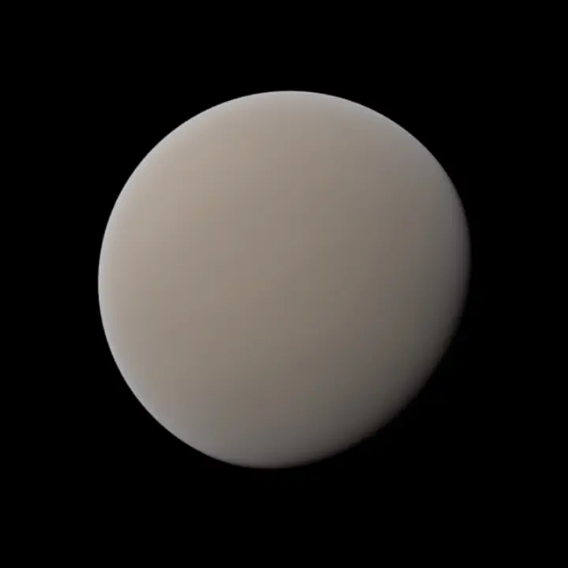

HD 40307 g — Exoplaneta

Introdução e História
HD 40307 g é um exoplaneta do tipo super-Terra que orbita a estrela HD 40307, uma anã laranja localizada a aproximadamente 42 anos-luz da Terra, na constelação de Pictor.
O planeta foi anunciado em 2012, a partir de dados obtidos pelo espectrógrafo HARPS, por meio do método da velocidade radial.
Características Físicas: Massa, Tamanho e Órbita
HD 40307 g possui uma massa mínima estimada de cerca de 7 vezes a massa da Terra, o que o classifica como uma super-Terra.
Ele orbita sua estrela em aproximadamente 197 dias terrestres, a uma distância que o coloca dentro da zona habitável do sistema.
Por enquanto, não há dados observacionais diretos sobre seu raio, composição interna ou presença de atmosfera.
Potencial de Habitabilidade
- Zona Habitável: HD 40307 g está localizado na zona habitável teórica, onde a água líquida poderia existir na superfície.
- Estrela Hospedeira: A estrela HD 40307 é uma anã laranja, mais fria e menos luminosa que o Sol, oferecendo um ambiente potencialmente estável.
- Atmosfera Desconhecida: Não há confirmação sobre atmosfera, oceanos ou condições reais de habitabilidade.
Apesar das incertezas, HD 40307 g é considerado um dos candidatos mais interessantes fora de sistemas de anãs vermelhas.
Curiosidades
HD 40307 g foi um dos primeiros exoplanetas anunciados como potencialmente habitável orbitando uma estrela diferente de uma anã vermelha.
O sistema HD 40307 possui pelo menos seis exoplanetas conhecidos.
Por ser uma super-Terra, o planeta pode ter uma gravidade superficial significativamente maior que a da Terra.
Origem do Nome
O nome “HD 40307 g” deriva do catálogo estelar Henry Draper (HD), seguido da designação da estrela e da letra que indica a ordem de descoberta do planeta no sistema.
Referências
- Wikipedia. HD 40307 g. Disponível em: https://en.wikipedia.org/wiki/HD_40307_g . Acesso em: 27 dez. 2025.
- NASA Exoplanet Catalog. HD 40307 g. Disponível em: https://science.nasa.gov/exoplanet-catalog/hd-40307-g/ . Acesso em: 27 dez. 2025.